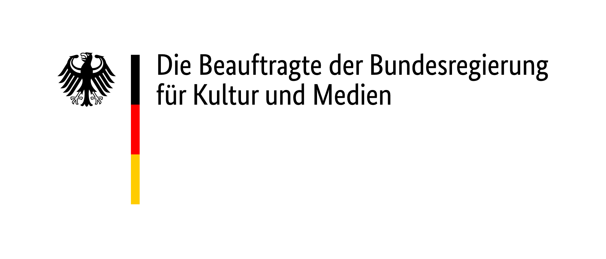
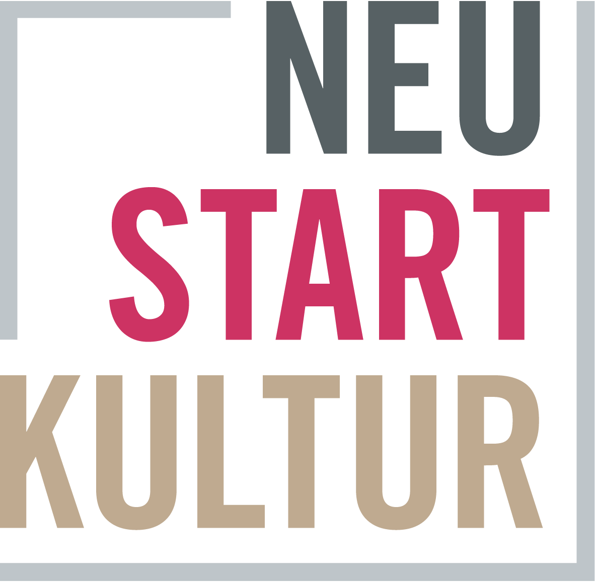

Die Kunstvermittlungs-App zum Kreativwerden über Jo Enzweiler |
Monika von Boch | Vera Molnár. Im Spiel mit Kontrasten und Vergrößerungen aus einer Struktur
unzählige verborgene Bilder entwickelt. Woraus setzt sich ein Bild im Kleinsten zusammen?
zu den spielen

jo enzweiler
Jo Enzweiler wurde 1934 in Merzig-Büdingen geboren. Er studierte Kunst und Kunsterziehung in München,
Toulon und Saarbrücken. Obwohl er in unterschiedlichen Medien arbeitet bezeichnet er sich selbst als
Maler. Als Künstler, Kunstlehrer und Kunstvermittler ist es ihm wichtig, die Kunst in die Gesellschaft
zu tragen. In seinem Verständnis findet Kunst auch in der Auseinandersetzung über sie statt.
Jo Enzweiler lebt und arbeitet in Wallerfangen/Saar. Sein Schaffen widmet er der konkreten Kunst.
Was das bedeutet und wo sie herkommt erfährst Du in dieser App.
(Bild: Jo Enzweiler, Hommage à El Lissitzky, 1978, St. Johanner Markt, Saarbrücken. Foto: Monika Zorn)
konkrete kunst
Die Fotografie als Kunstform ist eine junge Kunst. In Ihren Anfängen vor ca. 200 Jahren diente sie zunächst
dem Zweck eines naturgetreuen Abbildes. Erst Anfang des 20. Jahrhunderts erhoben Künstler*innen den Anspruch,
dass Fotografie auch Kunst sein kann.
Die Fotografie ist ein physikalisches und chemisches Verfahren, bei dem Licht in Bilder umgesetzt wird. Beim Fotografieren trifft Licht auf ein lichtempfindliches Material, das sich durch eine chemische Reaktion an den Stellen dunkel färbt, an denen es mit Licht in Kontakt kommt. Das nennt man Belichtung. Ursprünglich wurde ein lichtempfindliches Gel als dünne Schicht auf Glasplatten oder Karton gestrichen. Heute ist die lichtempfindliche Schicht auf Folie aufgebracht, die auf eine Spule aufgerollt ist - eine Filmrolle. Bei der digitalen Fotografie übernehmen Sensoren diese Aufgabe.
Beim Fotografieren mit der Fotokamera wird das Licht durch geschliffene Gläser, die so genannten Linsen, gebündelt; der Film wird belichtet. Die Belichtung ist abhängig von der Menge des Lichts und von der Lichtempfindlichkeit des Films: Je länger z.B. die Belichtungszeit ist, desto mehr Licht trifft auf den Film. Um die auf dem Film belichteten Bilder haltbar zu machen, muss der Film in einem abgedunkelten Raum, der sogenannten Dunkelkammer, entwickelt werden. Dort wird der Film in Entwicklerflüssigkeit getaucht und anschließend in einer zweiten Lösung, dem so genannten Fixierbad, fixiert. Die so entstandenen Bilder sind dauerhaft haltbar und nicht mehr veränderbar durch Licht. Sie heißen Negative, weil sie die hellen, belichteten Partien des Motivs dunkel zeigen.
Die Negative können auf Papier abgezogen werden; das nennt man Positiv-Abzug oder auch einfach Foto-Abzug. Auch die Abzüge werden auf lichtempfindlichem Fotopapier in der Dunkelkammer gefertigt. Dabei wird das Negativ unter einen Vergrößerungsapparat gelegt und das gesamte Bild oder auch nur ein ausgewählter Bereich des Negativs scharf eingestellt. Der Vergrößerungsapparat projiziert das Negativ auf ein beliebig großes Fotopapier, auch hierbei ist die Belichtungszeit von großer Bedeutung für das Bildergebnis. Wird während der Belichtung das Fotopapier bewegt oder die Einstellung des Vergrößerungsapparats verändert, entsteht Unschärfe im Bild.
Auf dem belichteten Fotopapier ist zunächst gar nichts zu sehen, es ist weiß. Erst wenn der Papierabzug in die Entwicklerflüssigkeit getaucht wird, erscheinen nach und nach die Kontraste, es ist der magische Moment der analogen Fotografie. Um diesen Vorgang zu beenden wird der Papierabzug in eine Stopper-Flüssigkeit (Wasser mit Essig) gelegt und anschließend in einem Fixierbad fixiert. Je nachdem wann die Entwicklung beendet wird ist das Bildergebnis kontrastarm (flau) oder kontrastreich.
Die künstlerischen Möglichkeiten beim Fotografieren sind deshalb so vielfältig, weil sowohl beim Aufnehmen der Bilder als auch bei der anschließenden Arbeit in der Dunkelkammer jede einzelne Entscheidung zählt. Von der Auswahl des Bildausschnitts über die gewählte Vergrößerung, die Einstellung der Schärfe bis zur Anwendung unterschiedlicher Fotopapiere und Chemikalien beeinflusst bei den einzelnen Arbeitsschritten auch immer der Faktor Zeit das Bildergebnis.
Die Fotografie ist ein physikalisches und chemisches Verfahren, bei dem Licht in Bilder umgesetzt wird. Beim Fotografieren trifft Licht auf ein lichtempfindliches Material, das sich durch eine chemische Reaktion an den Stellen dunkel färbt, an denen es mit Licht in Kontakt kommt. Das nennt man Belichtung. Ursprünglich wurde ein lichtempfindliches Gel als dünne Schicht auf Glasplatten oder Karton gestrichen. Heute ist die lichtempfindliche Schicht auf Folie aufgebracht, die auf eine Spule aufgerollt ist - eine Filmrolle. Bei der digitalen Fotografie übernehmen Sensoren diese Aufgabe.
Beim Fotografieren mit der Fotokamera wird das Licht durch geschliffene Gläser, die so genannten Linsen, gebündelt; der Film wird belichtet. Die Belichtung ist abhängig von der Menge des Lichts und von der Lichtempfindlichkeit des Films: Je länger z.B. die Belichtungszeit ist, desto mehr Licht trifft auf den Film. Um die auf dem Film belichteten Bilder haltbar zu machen, muss der Film in einem abgedunkelten Raum, der sogenannten Dunkelkammer, entwickelt werden. Dort wird der Film in Entwicklerflüssigkeit getaucht und anschließend in einer zweiten Lösung, dem so genannten Fixierbad, fixiert. Die so entstandenen Bilder sind dauerhaft haltbar und nicht mehr veränderbar durch Licht. Sie heißen Negative, weil sie die hellen, belichteten Partien des Motivs dunkel zeigen.
Die Negative können auf Papier abgezogen werden; das nennt man Positiv-Abzug oder auch einfach Foto-Abzug. Auch die Abzüge werden auf lichtempfindlichem Fotopapier in der Dunkelkammer gefertigt. Dabei wird das Negativ unter einen Vergrößerungsapparat gelegt und das gesamte Bild oder auch nur ein ausgewählter Bereich des Negativs scharf eingestellt. Der Vergrößerungsapparat projiziert das Negativ auf ein beliebig großes Fotopapier, auch hierbei ist die Belichtungszeit von großer Bedeutung für das Bildergebnis. Wird während der Belichtung das Fotopapier bewegt oder die Einstellung des Vergrößerungsapparats verändert, entsteht Unschärfe im Bild.
Auf dem belichteten Fotopapier ist zunächst gar nichts zu sehen, es ist weiß. Erst wenn der Papierabzug in die Entwicklerflüssigkeit getaucht wird, erscheinen nach und nach die Kontraste, es ist der magische Moment der analogen Fotografie. Um diesen Vorgang zu beenden wird der Papierabzug in eine Stopper-Flüssigkeit (Wasser mit Essig) gelegt und anschließend in einem Fixierbad fixiert. Je nachdem wann die Entwicklung beendet wird ist das Bildergebnis kontrastarm (flau) oder kontrastreich.
Die künstlerischen Möglichkeiten beim Fotografieren sind deshalb so vielfältig, weil sowohl beim Aufnehmen der Bilder als auch bei der anschließenden Arbeit in der Dunkelkammer jede einzelne Entscheidung zählt. Von der Auswahl des Bildausschnitts über die gewählte Vergrößerung, die Einstellung der Schärfe bis zur Anwendung unterschiedlicher Fotopapiere und Chemikalien beeinflusst bei den einzelnen Arbeitsschritten auch immer der Faktor Zeit das Bildergebnis.
(Bild: Monika von Boch, Selbstbildnis, 1958, Silbergelatinepapier)
links & downloads
Texte als PDF downloaden
Link zur App
(Smartphone & Tablet)
(Smartphone & Tablet)
Kontakt

Laboratorium
Institut für aktuelle Kunst im Saarland an der Hochschule der Bildenden Künste Saar mit Forschungszentrum für Künstlernachlässe
Choisyring 10, 66740 Saarlouis
+49 (0) 6831 - 460 530
info@how-to-app.de
info@institut-aktuelle-kunst.de
www.institut-aktuelle-kunst.de
Institut für aktuelle Kunst im Saarland an der Hochschule der Bildenden Künste Saar mit Forschungszentrum für Künstlernachlässe
Choisyring 10, 66740 Saarlouis
+49 (0) 6831 - 460 530
info@how-to-app.de
info@institut-aktuelle-kunst.de
www.institut-aktuelle-kunst.de
Gefördert durch
Die Entwicklung von How To: Monika von Boch wurde ermöglicht durch das Stipendienprogramm von
Coding da Vinci im Programm Kultur Digital
der Kulturstiftung des Bundes.
Die Umsetzung wurde gefördert von der Beauftragten der Bundesregierung für Kultur und Medien
im Rahmen des Sonderprogramms Neustart Kultur
als Förderprojekt des Programms KULTUR.GEMEINSCHAFTEN der Kulturstiftung der Länder.

